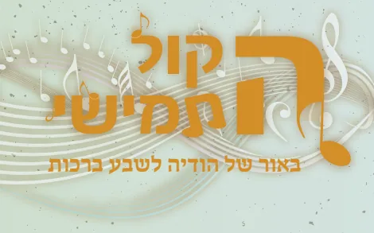
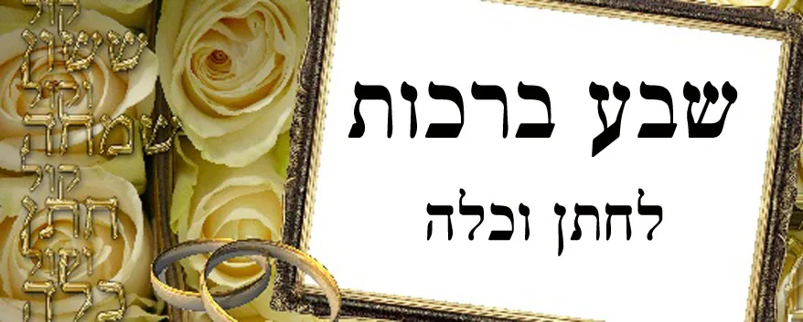

ביאור קל ועממי לשבע ברכות, עם טעם מתוק של הודיה. ■ הכנה נפלאה לחתן וכלה לזכות לברכה שבשבע הברכות. ■ מזכרת של הודיה לשבת שבע ברכות.

חז''ל הפליגו רבות במעלת המשמח חתן וכלה, וכולנו מתאמצים בשביל כך, גומעים מרחקים, מפסידים ערב שלם, והכול בשביל המצווה הגדולה לשמח חתן וכלה. מי מדבר על ההורים שהם משקיעים מעל ומעבר ליכולתם הכול בשביל המצווה הגדולה – שמחת חתן וכלה.
הרב יוסף ענגיל זצ''ל (המפורסם מספרו "אתוון דאוריתא") כתב בספרו "אוצרות יוסף" (דרוש ח'), דברים מפורשים: "עיקר העניין לשמח חתן וכלה הוא לגרום להם להודות להשי''ת". הרי זה מקרא מפורש בירמיה (לג,יא) שם ישנם חמשה קולות המוכרים לנו היטיב משמחת חתן וכלה: 1. ששון 2. שמחה 3. חתן 4. כלה. 5. "קול אומרים הודו את ה' צבאות" - הקול החמישי והאחרון הוא קול הודו, קול ההודיה לה'.
מוסיף הרב ענגיל: "האחרון כולל תמיד כל מה שלפניו, והוא הקול העיקרי. כי עיקר הענין לשמח חתן וכלה הוא שירגישו הודאה להשי''ת".
כדי שלא נגע לריק, טרח הרב המחבר מארגון קול תודה והוציא לקט נבחר בנושא ההודיה לה' בחתונה, מטרת שבע הברכות, ובאור נפלא עם רגשות הודיה על השבע ברכות.
עם וורטים וסיפורים כולם בנושא ההודיה לה', ונקרא שם הספר 'הקול החמישי' המיועד לחתן וכלה וכל המשתתפים כך מובטח בעז''ה שכל המשתתפים ירגישו הודאה מכל הלב להשי''ת.
ניתן לראות כאן את החוברת.
מחיר חוברת אחת בעמדות לעולם אודך ברחבי הארץ - 5 ש"ח
ניתן לקבל את החוברת במשלוח עד הבית במחיר 10 ש"ח.
- מבצע לחתונות
מומלץ מאוד להזמין 50 חוברות לחתונה ולשבת חתן
שיהיה לכולם ברכונים מלאים שמחה והודיה
ובנוסף יש הלכות שבע ברכות, וברכה לחתן מיוחדת
והכל במחיר מבצע של: 150 ש"ח כולל משלוח עד הבית.
לפרטים: 055-6785647
מה תתן לי החוברת?
במשך שבעה ימים החתן והכלה חורשים את הארץ לארכה ולרחבה.
הרבה פעמים הם שואלים את עצמם, לשם מה הטירחה הזו?
כאשר לומדים את הבאור של השבע ברכות, מרגישים את השפע, את הטוב,
שיש בכל ברכה, ששווה בשביל זה גם לסוע לירח.
לימוד קצר עם הכלה - כל יום בשבע ברכות ברכה אחת
יתן לכם כזאת התרגשות והתלהבות, ממש חיים אחרים.
ניתן לקבל את החוברת במשלוח עד הבית במחיר 10 ש"ח.